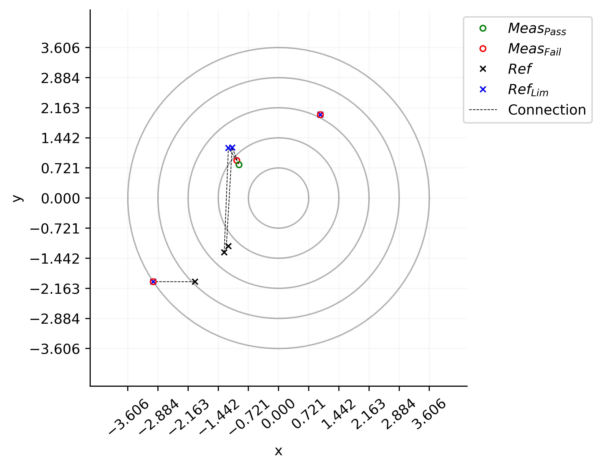
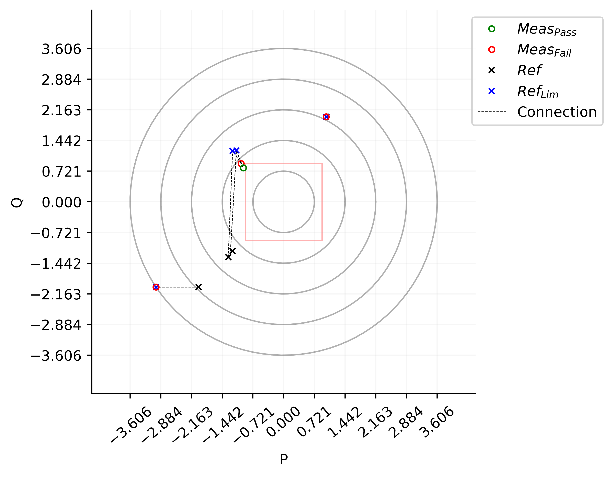

XY_graph¶
- class typhoon.test.reporting.figures.XY_graph(df_keys=None)¶
Bases:
XY_data_implBase class for XY graph plotting.
Methods Summary
add_xy_datapoint(data)Set the XY data for the plot.
plot([x_name, y_name, title, radius_lines, ...])Plots an XY graph with the given parameters.
set_xy_dataframe(df_xy_data)Overwrite the current dataframe on
XY_graph.df_xy_data.Methods Documentation
- add_xy_datapoint(data)¶
Set the XY data for the plot.
- Parameters:
data (list or dict) –
List of XY data points to be plotted. If a
listis provided, it should contain 7 or 9 elements. The order of the elements for thelisttype is the same as shown in the next bulleted list.- If a
dictis provided, it should contain keys: - Mandatory keys:
'x': Coordinate on the x-axis of the plot.'x_ref': Reference coordinate on the x-axis of the plot.'x_reflim': Reference limit coordinate on the x-axis of the plot.'y': Coordinate on the y-axis of the plot.'y_ref': Reference coordinate on the y-axis of the plot.'y_reflim': Reference limit coordinate on the y-axis of the plot.'result': Assertion of the analysis of this coordinate.Falseor0: Failed outcome. Red circle is plotted on the XY Graph.Otherwise: Passed outcome. Green circle is plotted on the XY Graph.
- Optional keys:
'x_reflim2': Extra reference limit coordinate betweenx_refandx_reflim.'y_reflim2': Extra reference limit coordinate betweeny_refandy_reflim.
- If a
- Return type:
None
Examples
>>> import typhoon.test.reporting.figures as XY_graph >>> xy_graph = XY_graph() >>> >>> # List without the extra reference limits >>> xy_graph.add_xy_datapoint([1, 1, 1, 2, 2, 2, 0]) >>> >>> # List with the extra reference limits >>> xy_graph.add_xy_datapoint([-1, -1.3, -1.2, 0.9, -1.3, 1.2, 0]) >>> >>> # Dictionary without the extra reference limits >>> xy_graph.add_xy_datapoint({ >>> 'x': -3, >>> 'x_ref': -2, >>> 'x_reflim': -3, >>> 'y': -2, >>> 'y_ref': -2, >>> 'y_reflim': -2, >>> 'result': False, >>> }) >>> >>> # Dictionary with the extra reference limits >>> xy_graph.add_xy_datapoint({ >>> 'x': -0.95, >>> 'x_ref': -1.2, >>> 'x_reflim': -1.11, >>> 'y': 0.8, >>> 'y_ref': -1.15, >>> 'y_reflim': 1.21, >>> 'result': True, >>> 'x_reflim2': -1.25, >>> 'y_reflim2': -1.18 >>> })
See also
typhoon.test.reporting.figures.XY_graph,typhoon.test.reporting.figures.set_xy_dataframe,typhoon.test.reporting.figures.XY_graph.plot
- plot(x_name='x', y_name='y', title='XY Plot', radius_lines=5, lim=(None, None, None, None), radius_outer='auto', save_location='Allure')¶
Plots an XY graph with the given parameters.
- Parameters:
x_name (str) – Label for the x-axis plot. Defaults to ‘x’.
y_name (str) – Label for the y-axis. Defaults to ‘y’.
title (str) – Title of the plot in the Allure Step (only used if save_location=”Allure”). Defaults to “XY Plot”.
radius_lines (int) – Number of radius lines to draw. Defaults to 5.
lim (tuple with 4 elements) – Tuple specifying plot limits (x_min, x_max, y_min, y_max). If not defined, it doesn’t generate these limits.
radius_outer ("auto" or numeric) – Outer radius of the plot. Defaults to ‘auto’. If ‘auto’, the outer radius is calculated based on the data. If numeric, the outer radius is set to the given value.
save_location (str) – File path to save the plot. Defaults to “Allure”. If “Allure” or “allure” is used, the plot is attached in the Allure report. If a file path is provided, the plot is saved to that location.
- Return type:
None
Examples
>>> from typhoon.test.reporting.figures import XY_graph >>> xy_graph = XY_graph() >>> >>> # List without the extra reference limits >>> xy_graph.add_xy_datapoint([1, 1, 1, 2, 2, 2, 0]) >>> >>> # List with the extra reference limits >>> xy_graph.add_xy_datapoint([-1, -1.3, -1.2, 0.9, -1.3, 1.2, 0]) >>> >>> # Dictionary without the extra reference limits >>> xy_graph.add_xy_datapoint({ >>> 'x': -3, >>> 'x_ref': -2, >>> 'x_reflim': -3, >>> 'y': -2, >>> 'y_ref': -2, >>> 'y_reflim': -2, >>> 'result': False, >>> }) >>> >>> # Dictionary with the extra reference limits >>> xy_graph.add_xy_datapoint({ >>> 'x': -0.95, >>> 'x_ref': -1.2, >>> 'x_reflim': -1.11, >>> 'y': 0.8, >>> 'y_ref': -1.15, >>> 'y_reflim': 1.21, >>> 'result': True, >>> 'x_reflim2': -1.25, >>> 'y_reflim2': -1.18 >>> }) >>> >>> # Plotting the XY graph >>> xy_graph.plot()
This function will attach the XY graph to the Allure report as:

Using some of the parameters from this function, the XY graph can be plotted with labels, title, limits, and more:
>>> xy_graph.plot(x_name='P', y_name='Q', title="Active/Reactive Power graph", lim=(-0.9, 0.9, -0.9, 0.9))

See also
typhoon.test.reporting.figures.XY_graph,typhoon.test.reporting.figures.set_xy_dataframe,typhoon.test.reporting.figures.XY_graph.add_xy_datapoint
- set_xy_dataframe(df_xy_data)¶
Overwrite the current dataframe on
XY_graph.df_xy_data.- Parameters:
df_xy_data (pandas.DataFrame) – DataFrame with the data to be replaced in the XY_graph class.
- Return type:
None
Examples
>>> import pandas as pd >>> >>> df_keys = ["C1", "C2", "C3", "C4", "C5", "C6", "C7", "C8", "C9"] >>> df_data = { >>> "C1": [1, 2, 3, 4, 5], >>> "C2": [6, 7, 8, 9, 10], >>> "C3": [11, 12, 13, 14, 15], >>> "C4": [16, 17, 18, 19, 20], >>> "C5": [21, 22, 23, 24, 25], >>> "C6": [26, 27, 28, 29, 30], >>> "C7": [31, 32, 33, 34, 35], >>> "C8": [36, 37, 38, 39, 40], >>> "C9": [41, 42, 43, 44, 45] >>> } >>> xy_graph = XY_graph() >>> new_df = pd.DataFrame(df_data) >>> xy_graph.set_xy_dataframe(new_df)